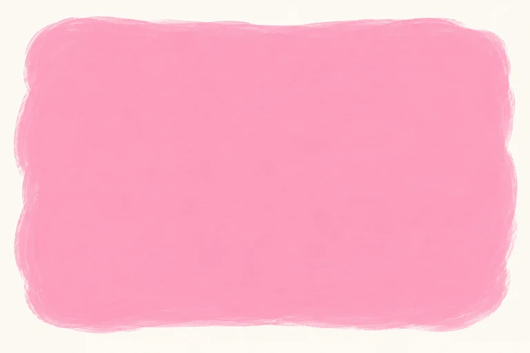

dolphin
cá heo
DOLPHIN
My favourite animal is a dolphin.
Chưa đánh dấu
Review 1 · Học trước, thử nhớ rồi luyện đề
Ôn kết hợp Units 1–5: bản thân, nhà ở, bạn bè, sở thích và nghề nghiệp.
Giọng có sẵn trên thiết bị. Thiếu giọng Anh thì em vẫn xem chữ và luyện viết được.
Bấm Nghe khi em sẵn sàng. Trang không tự phát âm thanh.
Nghe cả từ/cụm, đọc theo rồi dùng ABC để nhớ cách viết. ABC đọc tên chữ cái, không phải bài luyện âm. Với cụm nhiều từ, các nhóm chữ được tách riêng.
Chưa có từ cần ôn. Em chọn một nhóm rồi bấm “Cần ôn lại” ở từ muốn luyện thêm nhé.
cá heo
My favourite animal is a dolphin.
Chưa đánh dấu

màu hồng
My favourite colour is pink.
Chưa đánh dấu
quốc tịch Úc
My friend is Australian.
Chưa đánh dấu

thân thiện
My friend is friendly.
Chưa đánh dấu

ngôi nhà
I live in a house.
Chưa đánh dấu

căn hộ
I live in a flat.
Chưa đánh dấu
địa chỉ
My address is 21 Rose Street.
Chưa đánh dấu
gần
My home is near my school.
Chưa đánh dấu

tưới hoa (V-ing)
I like watering the flowers.
Chưa đánh dấu

chơi đàn vi-ô-lông (V-ing)
I like playing the violin.
Chưa đánh dấu

nhà văn
I would like to be a writer.
Chưa đánh dấu
đưa tin
I would like to report the news.
Chưa đánh dấu
diễn viên
An actor can work at a theatre.
Chưa đánh dấu
dập lửa
Firefighters put out fires.
Chưa đánh dấu
Nghe hội thoại rồi đọc theo. “Đến lượt em” chỉ đọc A để em nói câu trả lời của B.
A: Can you tell me about yourself?
B: I am An. I am in Grade 5.
Tên và lớp là thông tin giả định để luyện.
A: What is your friend like?
B: She is helpful. She is Japanese.
Câu đầu nói tính cách; câu sau nói quốc tịch.
A: What is your address?
B: It is 21 Rose Street.
Không cần nhập địa chỉ thật của em.
A: Do you live in a flat?
B: No, I do not. I live in a house.
In + loại nhà, at + địa chỉ cụ thể.
A: What do you like doing?
B: I like playing the violin. I would like to be a teacher.
Sở thích và nghề mơ ước có thể khác nhau.
A: Why would you like to be a reporter?
B: Because I would like to report the news.
Because nêu lý do, would like to + nguyên mẫu.
Ví dụ tự soạn. Vị trí và sở thích là giả định theo từng ví dụ. Trang không thu âm hoặc tự chấm giọng của em.
Mỗi nhóm có bốn bài nhỏ, không giới hạn thời gian. Em được sửa rồi thử lại. Câu trả lời tự lưu để quay lại làm tiếp.